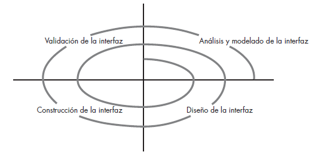

El proceso general de análisis y diseño de la interfaz de usuario comienza con la creación de diferentes modelos del funcionamiento del sistema. Se emplean herramientas para hacer prototipos e implementar el modelo del diseño, y los usuarios finales evalúan la calidad.
1. Análisis y modelos del diseño de la interfaz
Cuando se analiza y diseña la interfaz de usuario, entran en juego cuatro diferentes modelos. Un ingeniero (o el encargado del software) establece un modelo de usuario, el ingeniero de software crea un modelo del diseño, el usuario final desarrolla una imagen mental que frecuentemente se nombra modelo mental o percepción del sistema, y los implementadores del sistema crean un modelo de implementación.
-
- Modelo de diseño, todo diseño debe comenzar con la comprensión de los usuarios que se busca, lo que incluye los perfiles de edad, género, condiciones físicas, educación, antecedentes culturales o étnicos, motivación, metas y personalidad.
- El modelo del usuario establece el perfil de los usuarios finales del sistema.
- El modelo mental del usuario (percepción del sistema) es la imagen del sistema que los usuarios finales llevan en la cabeza.
- El modelo de implementación combina la manifestación externa del sistema basado en computadora con toda la información de apoyo que describe la sintaxis y semántica de la interfaz.
2. El proceso
El proceso de análisis y diseño de interfaces de usuario es iterativo y se representa con un modelo espiral. En la mayoría de los casos, la actividad de modelado involucra la hechura de prototipos, única forma práctica de validar lo que se haya diseñado.
El análisis de la interfaz se centra en el perfil de los usuarios que interactuarán con el sistema. Se registra el nivel de habilidad, la comprensión del negocio y la receptividad general hacia el nuevo sistema; también se definen diferentes categorías de usuarios.
Una vez definidos los requerimientos generales, se lleva a cabo un detallado análisis de la tarea. Asimismo, se identifican, describen y elaboran aquellas tareas que el usuario realice para alcanzar las metas del sistema.
